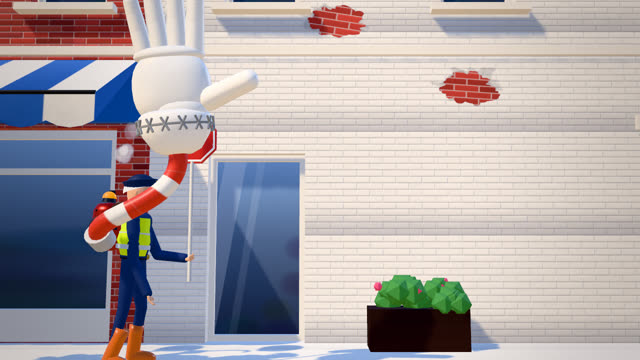
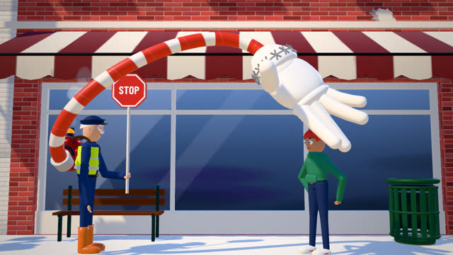
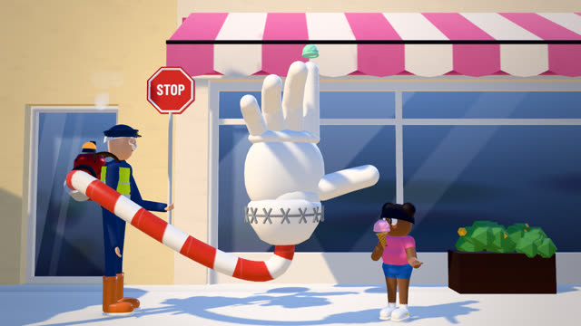
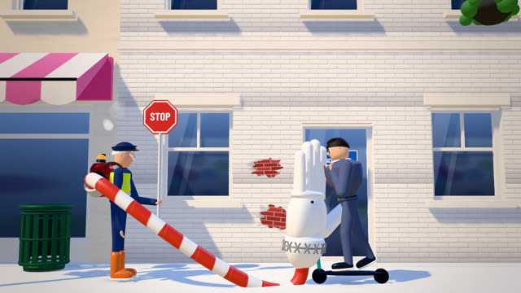
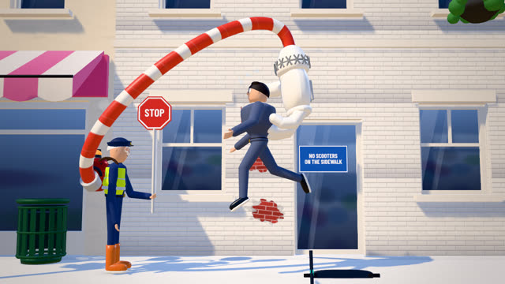
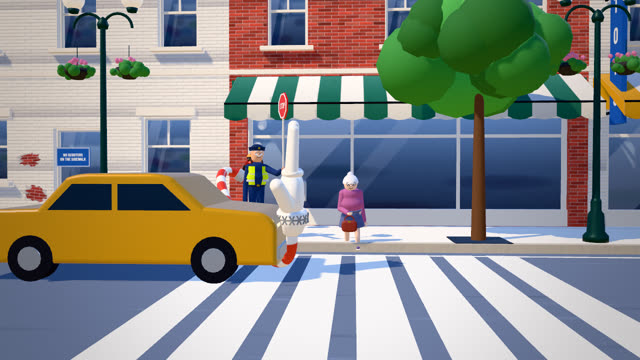
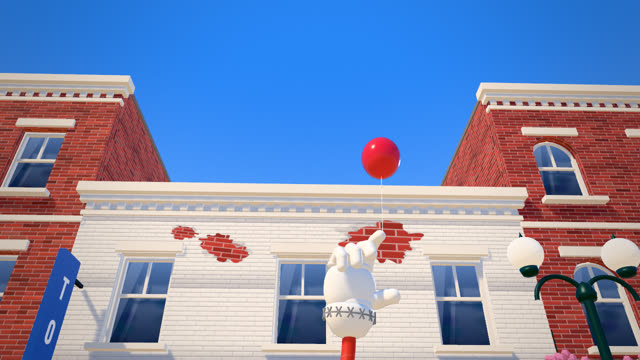
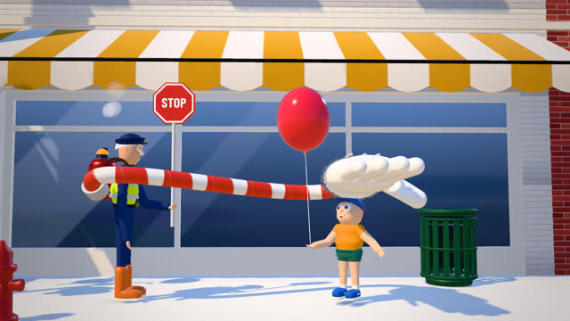
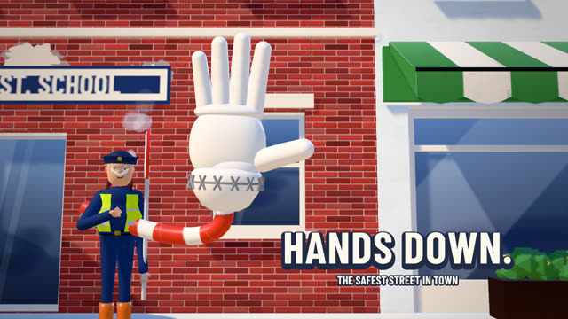

작업 흐름
- 입력
- 주제 하나(직업 · 주인공 · 장소: 건널목 지킴이, 제빵사, 사서, 인명 구조원 …). 레퍼런스 영상이 있으면 그 스틸과 컷 시간
- 브리프
- 주인공과 등의 기계, 주제에서 나온 도구와 말장난, 거리, 도움과 응징이 번갈아 커지는 개그 4–7개의 표(설정 → 알아챔 → 행동 → 결과 → 마무리)를 담은
BRIEF.md - 그림
- 창문이 실제로 뚫린 벽돌 · 흰 칠 · 회벽 건물과 줄무늬 차양의 three.js 거리, 눈꺼풀과 눈썹이 움직이는 바이닐 인형 같은 캐릭터, 손가락 마디와 손 모양 22가지의 장갑, 매 프레임 다시 만드는 고무호스, 움직임이 빠른 프레임에만 거는 모션 블러
- 확인
- 행동 · 마무리 순간의 스틸을 채점하는 기준, 콘택트 시트, 결정성 · 땅 밑으로 꺼짐 · 형식 · 효과음 검사
- 출력
- 30fps 1920×1080 MP4(그루브 · 효과음 포함), ♪ 버튼으로 소리까지 재생하는 라이브 페이지
cd sight-gag-short/examples/crossing-guard
node ../../scripts/check.mjs index.html
node ../../scripts/render.mjs index.html --sheet 24 --scale .5 --q mb=1
node ../../scripts/score.mjs index.html
node ../../scripts/render.mjs index.html --workers 3 --q mb=3 --audio out/film.wav
node ../../scripts/new-film.mjs ../../../my-short요구 사항: Node + Playwright Chromium, ffmpeg. 네트워크와 GPU가 필요 없습니다(CPU에서 1080p 한 프레임이 약 3초, 모션 블러가 걸리는 프레임은 6–9초). 단계별 순서는 SKILL.md에 있습니다.
샘플
예제 「Hands Down」의 개그 다섯 개와, 같은 엔진으로 주인공 · 도구 · 개그를 모두 바꾼 시작 템플릿입니다. 카드를 누르면 새 탭에서 그 순간에 멈춘 장면이 열리고, 브라우저가 벽돌 한 장부터 직접 그립니다.
Hands Down 16:9 · 27.5초 · 7샷 · 개그 5개
무표정한 학교 앞 건널목 지킴이 월트가 메이플 거리를 걷습니다. 일은 빨강 · 흰 줄무늬 호스 끝의 하얀 장갑이 다 합니다.









Handle With Care 템플릿 · 12초 · 개그 2개
같은 엔진으로 주제를 바꾼 출발점입니다. 무표정한 제빵사 로사의 빨간 뜨개 오븐 장갑이 파이 도둑의 손을 때리고 넘어가는 상자 탑을 세웁니다.
실제 작품
이 레포에서 만든 스킬입니다. Min Story Lab이 X에 올린 31초 영상(Seedance 2.5로 만든, 실험복 차림 주인공의 거대한 가죽 장갑이 흡연자, 사다리, 물웅덩이, 낙서, 소매치기를 차례로 해결하는 영상)이 출발점입니다. 그 영상은 AI 영상 모델이 만든 것이라, 이 스킬은 형식과 화면의 문법(무표정한 주인공, 등의 기계에서 늘어나는 장갑, 한 거리, 고정된 와이드샷 하나에 개그 하나, 이어지는 그루브, 말장난)만 가져오고 그림과 소리는 직접 만든 엔진이 만듭니다. 예제의 주인공, 장갑, 개그, 음악은 모두 이 레포의 것입니다.
링크
- SKILL.md 워크플로
- 폴더 lib · scripts · references · templates · examples
- README.md 빠른 시작
- references/BRIEF.md 고정되는 것과 주제마다 설계하는 것, 브리프 틀, 스틸 채점 기준
- references/STORY.md 주제 → 주인공 → 도구 → 개그, 개그의 문법과 타이밍
- references/LOOK.md 레퍼런스를 잰 값과 맞춘 값
- references/KIT.md API
- references/LESSONS.md 겪은 문제와 해결